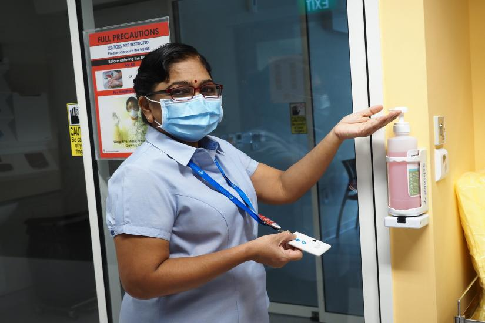

Sister Pathma , 62, Assistant Director of Nursing
When reports about the spread of Covid-19 from China began to emerge early this year, Sister Patmawali K and her team braced themselves for an imminent outbreak in Singapore. "We are always prepared for any form of emerging diseases," said the 62-year-old Assistant Director of Nursing who currently oversees the wards at the National Centre for Infectious Diseases (NCID) and has more than 45 years of nursing experience.
A leader of the disease outbreak workgroup, which plans for people, material and waste movement at NCID, Sister Patma had also mapped out the patient transfer routes between NCID and Tan Tock Seng Hospital. Such early preparation, she said, allowed the NCID staff to act much faster when Covid-19 broke out in Singapore.
Her presence at the wards where nurses are taking care of Covid-19 patients has been described by her colleague Chen Jin as "empowering".
Wish to tell us about someone you know? Click here!